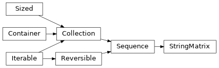

PyPop.utils#
Module for common utility classes and functions.
Contains convenience classes for output of text and XML files.
Attributes#
Separator between genotypes |
|
Terminator of genotypes |
Classes#
Output stream for writing text files. |
|
Output stream for writing XML files. |
|
Matrix of strings and other metadata from input file to PyPop. |
|
Group list or sequence into non-overlapping chunks. |
Functions#
|
Log a CRITICAL message and exit with status 1. |
|
Get the type of stream. |
|
Use globbing with |
|
Generate a key for natural (human-friendly) sorting. |
|
Gets the unique elements in a list. |
|
Append a string to each element in a list. |
|
Convert line endings based on platform. |
|
Fix for some Windws/MS-DOS platforms. |
|
Copy file to file with fixes. |
|
Copy file to directory with fixes. |
|
Check XSL filename and return full path. |
|
Get user filename input. |
|
Divides a list up into n parcels (plus whatever is left over). |
Module Contents#
- GENOTYPE_SEPARATOR = '~'#
Separator between genotypes
Example
In a haplotype
01:01~13:01~04:02
- GENOTYPE_TERMINATOR = '~'#
Terminator of genotypes
Example
`02:01:01:01~
- class TextOutputStream(file)#
Output stream for writing text files.
- Parameters:
file (file) – file handle
- close()#
Close stream.
- flush()#
Flush to disk.
- class XMLOutputStream(file)#
Bases:
TextOutputStream
Output stream for writing XML files.
- opentag(tagname, **kw)#
Write an open XML tag to stream.
Tag attributes passed as optional named keyword arguments.
Example
opentag('tagname', role=something, id=else)produces the result:
<tagname role="something" id="else">Attribute and values are optional:
opentag('tagname')Produces:
<tagname>See also
Must be be followed by a
closetag().- Parameters:
tagname (str) – name of XML tag
- emptytag(tagname, **kw)#
Write an empty XML tag to stream.
This follows the same syntax as
opentag()but without XML content (but can contain attributes).Example
`emptytag('tagname', attr='val')produces:
<tagname attr="val"/>- Parameters:
tagname (str) – name of XML tag
- class StringMatrix(rowCount=None, colList=None, extraList=None, colSep='\t', headerLines=None)#
Bases:
collections.abc.SequenceMatrix of strings and other metadata from input file to PyPop.
StringMatrixis a subclass ofcollections.abc.Sequenceand represents genotype or locus-based data in a row-oriented matrix structure with NumPy-style indexing and sequence semantics. Rows correspond to individuals, and columns correspond to loci.The object supports indexing, assignment, copying, and printing using standard Python and NumPy idioms.
- Parameters:
Note
len(matrix)returns the number of rows.Indexing retrieves data by locus or locus combinations.
Assignment updates genotype or metadata values in place.
Slicing over rows (e.g.,
matrix[i:j]) is not currently supported.Deep copying produces a fully independent matrix.
Examples
Create a matrix of two individuals with two loci and assign genotype data:
>>> matrix = StringMatrix(2, ["A", "B"]) >>> matrix [0, "A"] = ("A0_1", "A0_2") >>> matrix [1, "A"] = ("A1_1", "A1_2") >>> matrix [0, "B"] = ("B0_1", "B0_2") >>> matrix [1, "B"] = ("B1_1", "B1_2")
Length of matrix is defined as the number of individuals in the matrix:
>>> len(matrix) 2
Retrieve data for a single locus:
>>> matrix["A"] [['A0_1', 'A0_2'], ['A1_1', 'A1_2']]
String representation:
>>> print (matrix) StringMatrix([['A0_1', 'A0_2', 'B0_1', 'B0_2'], ['A1_1', 'A1_2', 'B1_1', 'B1_2']], dtype=object)
Copying the matrix:
>>> import copy >>> m2 = copy.deepcopy(matrix) >>> m2 is matrix False
- __len__()#
Get number of rows (individuals) in the matrix.
This allows
StringMatrixinstances to be used with len(), iteration, and other Python sequence protocols.- Returns:
number of rows in the matrix
- Return type:
- __deepcopy__(memo)#
Create a deepcopy for
copy.deepcopy.This simply calls
self.copy()to allowcopy.deepcopy(matrixInstance)to work out of the box.- Parameters:
memo (dict) – opaque object
- Returns:
copy of the matrix
- Return type:
- __getslice__(i, j)#
Get slice (overrides built-in).
Warning
Currently not supported for
StringMatrix
- __getitem__(key)#
Get the item at given key (overrides built-in numpy).
- __setitem__(index, value)#
Set the value at an index (override built in).
- Parameters:
- Raises:
IndexError – if
indexis not a tupleValueError – if
valueis not a tuple or stringKeyError – if the
indexcan’t be found
- dump(locus=None, stream=sys.stdout)#
Write file to a stream in original format.
- Parameters:
locus (str, optional) – write just specified locus, if omitted, default to all loci
stream (TextOutputStream|XMLOutputStream|stdout) – output stream
- copy()#
Make a (deep) copy.
- Returns:
a deep copy of the current object
- Return type:
- getNewStringMatrix(key)#
Create new StringMatrix containing specified loci.
Note
The format of the keys is identical to
__getitem__()except that it returns a fullStringMatrixinstance which includes all metadata
- getUniqueAlleles(key)#
Get naturally sorted list of unique alleles.
- convertToInts()#
Convert the matrix to integers.
Note
This function is used by the
PyPop.haplo.Haplostatsclass. Note that integers start at 1 for compatibility with haplo-stats module- Returns:
matrix where the original allele names are now represented by integers
- Return type:
- countPairs()#
Count all possible pairs of haplotypes for each matrix row.
Warning
This does not do any involved handling of missing data as per
geno.count.pairsfrom Rhaplo.statsmodule.- Returns:
each element is the number of pairs in row order
- Return type:
- flattenCols()#
Flatten columns into a single list.
Important
Currently assumes entries are integers.
- Returns:
all alleles, the two genotype columns concatenated for each locus
- Return type:
- filterOut(key, blankDesignator)#
Get matrix rows filtered by a designator.
- getSuperType(key)#
Get a matrix grouped by specified key.
Example
Return a new matrix with the column vector with the alleles for each genotype concatenated like so:
>>> matrix = StringMatrix(2, ["A", "B"]) >>> matrix[0, "A"] = ("A01", "A02") >>> matrix[1, "A"] = ("A11", "A12") >>> matrix[0, "B"] = ("B01", "B02") >>> matrix[1, "B"] = ("B11", "B12") >>> print(matrix) StringMatrix([['A01', 'A02', 'B01', 'B02'], ['A11', 'A12', 'B11', 'B12']], dtype=object) >>> matrix.getSuperType("A:B") StringMatrix([['A01:B01', 'A02:B02'], ['A11:B11', 'A12:B12']], dtype=object)
- Parameters:
key (str) – loci to group
- Returns:
a new matrix with the columns concatenated
- Return type:
- class Group(li, size)#
Group list or sequence into non-overlapping chunks.
Example
>>> for pair in Group('aabbccddee', 2): ... print(pair) ... aa bb cc dd ee
>>> a = Group('aabbccddee', 2) >>> a[0] 'aa' >>> a[3] 'dd'
- __getitem__(group)#
Get the item by position.
- Parameters:
group (int) – get the item by position
- Returns:
the value at that position
- Return type:
- Raises:
IndexError – if
groupis out of bounds
- critical_exit(message, *args)#
Log a CRITICAL message and exit with status 1.
Added in version 1.4.0.
- Parameters:
message (str) – Logging format string.
- getStreamType(stream)#
Get the type of stream.
- Parameters:
stream (TextOutputStream|XMLOutputStream) – stream to check
- Returns:
either
xmlortext.- Return type:
string
- glob_with_pathlib(pattern)#
Use globbing with
pathlib.
- natural_sort_key(s, _nsre=re.compile('([0-9]+)'))#
Generate a key for natural (human-friendly) sorting.
This function splits a string into text and number components so that numbers are compared by value instead of lexicographically. It is intended for use as the
keyfunction inlist.sort()orsorted().Example
>>> items = ["item2", "item10", "item1"] >>> sorted(items, key=natural_sort_key) ['item1', 'item2', 'item10']
- Parameters:
s (str) – The string to split into text and number components.
_nsre (Pattern) – Precompiled regular expression used internally to split the string into digit and non-digit chunks. This is not intended to be overridden in normal use.
- Returns:
A list of strings and integers to be used as a sort key.
- Return type:
- unique_elements(li)#
Gets the unique elements in a list.
- appendTo2dList(aList, appendStr=':')#
Append a string to each element in a list.
- convertLineEndings(file, mode)#
Convert line endings based on platform.
- fixForPlatform(filename, txt_ext=0)#
Fix for some Windws/MS-DOS platforms.
- copyfileCustomPlatform(src, dest, txt_ext=0)#
Copy file to file with fixes.
- copyCustomPlatform(file, dist_dir, txt_ext=0)#
Copy file to directory with fixes.
- checkXSLFile(xslFilename, path='', subdir='', abort=False, msg='')#
Check XSL filename and return full path.
- Parameters:
- Returns:
checked and validaated path
- Return type:
- getUserFilenameInput(prompt, filename)#
Get user filename input.
Read user input for a filename, check its existence, continue requesting input until a valid filename is entered.
- splitIntoNGroups(alist, n=1)#
Divides a list up into n parcels (plus whatever is left over).
Example
>>> a = ['A', 'B', 'C', 'D', 'E'] >>> splitIntoNGroups(a, 2) [['A', 'B'], ['C', 'D'], ['E']]